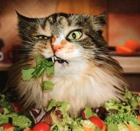

Grace Sutton
Student at DIT



Grace is a dedicated and hardworking student currently in her second year of study in a four year BSc. Honours course in Computer Science.
From her experience with this course, Grace has developed knowledge and experience in many programming languages such as C, C#, PHP, HTML and SQL. This course has granted Grace a firm understanding of the fundamentals of Computer Science, and has fueled her interest and passion in the subject. Grace has a strong interest in volunteering and this is reflected in her experience working with various charities. She has volunteered for Oxfam on several occasions, as well as several local organisations. Grace has worked on a team for local community events, most notably the Regatta Festival and Arts Festival which both take place in her locality. Events such as this have helped her develop and improve teamwork and project management skills. On campus, Grace has been involved in events organised by students of DIT. Most recently Grace participated in DIT's games, anime, and sci-fi convention, GAScon as a volunteer. She also participated in a Game Development workshop for second level students held in DIT. Volunteering and working on team projects has granted Grace invaluable skill and experience working with others and organising events.
From her experience with this course, Grace has developed knowledge and experience in many programming languages such as C, C#, PHP, HTML and SQL. This course has granted Grace a firm understanding of the fundamentals of Computer Science, and has fueled her interest and passion in the subject. Grace has a strong interest in volunteering and this is reflected in her experience working with various charities. She has volunteered for Oxfam on several occasions, as well as several local organisations. Grace has worked on a team for local community events, most notably the Regatta Festival and Arts Festival which both take place in her locality. Events such as this have helped her develop and improve teamwork and project management skills. On campus, Grace has been involved in events organised by students of DIT. Most recently Grace participated in DIT's games, anime, and sci-fi convention, GAScon as a volunteer. She also participated in a Game Development workshop for second level students held in DIT. Volunteering and working on team projects has granted Grace invaluable skill and experience working with others and organising events.
Experience
Jan 2015 - Aug 2015
Intern
Awards and Acheivements
Hackathon Winner 2015
Member of the winning team in the MasterCard Intern Hackathon Challenge that took part in August 2015
Academic Excellence 2013
Received for achieving exceptional grades in school exams
Skills

C#
Java

SQL

PostgreSQL
JavaScript

HTML
Interests

Reading

Ukulele
Cats